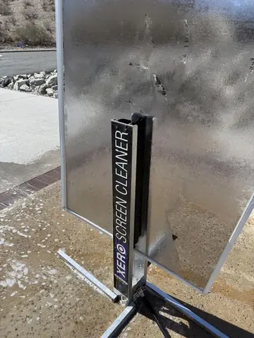

Inicio/Limpieza de ventanas
Hesperia y todo el High DesertLimpieza de ventanas con agua purificada
$149 un piso, $249 dos pisos, por fuera, con mosquiteros, rieles y repisas incluidos. Por dentro, todas las ventanas de la casa por $49 más.
Aquí arriba las ventanas no se ensucian igual que en la ciudad. El polvo del desierto llega con cada viento y los aspersores dejan minerales que se hornean en el vidrio con el sol. Una limpieza con agua purificada quita las dos cosas y deja el vidrio claro más tiempo, porque no queda nada que atraiga el polvo.
Lee nuestras reseñas en Google · Inspección gratis · Satisfacción garantizada
¿Quieres ver trabajos de limpieza de ventanas que hemos hecho?
Fotos de nuestros propios trabajos. Toca una para verla más grande.
 Fila de ventanas del frente
Fila de ventanas del frente Spring Valley Lake · Vidrio de arriba desde la escalera
Spring Valley Lake · Vidrio de arriba desde la escalera Apple Valley · Segundo piso con pértiga de agua
Apple Valley · Segundo piso con pértiga de agua Hesperia · Ventanas con cuadrícula
Hesperia · Ventanas con cuadrícula
Apple Valley · Mosquiteros lavados en el lugar Puerta corrediza
Puerta corrediza


¿Te gusta lo que ves? Arma tu proyecto aquí abajo.
Cuéntale a Tony qué necesita tu propiedad
Elige uno o varios servicios y una fecha preferida. Tony confirma personalmente el trabajo, el precio final y la cita. No se cobra aquí.
Vidrio limpio con cuidado y opciones claras
Tallamos el vidrio con cuidado y revisamos el acabado antes de dar por terminado el servicio. El alcance indicado para la limpieza exterior incluye mosquiteros, rieles y alféizares; la limpieza interior es una opción adicional que aparece por separado en la cotización. Las manchas de agua dura o la restauración se revisan y cotizan aparte. Cuéntanos sobre el acceso y cualquier vidrio especial para definir bien el trabajo.
¿Se incluyen las ventanas por dentro?
El vidrio interior es una opción adicional que aparece por separado en la cotización. Revisa qué vidrios y áreas se incluyen antes de confirmar el trabajo.
¿La limpieza regular incluye restauración de agua dura?
La limpieza de rutina y la restauración tienen alcances distintos. Las manchas minerales, el vidrio dañado y los trabajos especiales se revisan y cotizan aparte. Los precios ya acordados con clientes no se cambian automáticamente.
Revisa las opciones y pide tu cotización
Tony confirma el día solicitado después de revisar la disponibilidad.
Lo que trae cada limpieza
Mosquiteros
Se quitan, se tallan y se enjuagan, y vuelven a su lugar. Un mosquitero gris tapa más luz de lo que parece, y la tierra se regresa al vidrio si no se limpia.
Rieles y repisas
Los rieles se limpian y las repisas se secan. Casi todas las cuadrillas limpian por fuera y dejan el agua sucia en el riel. Nosotros no.
Agua purificada
Agua sin minerales, así que el vidrio seca claro y sin manchas. Los segundos pisos se limpian desde el suelo con una pértiga, sin escaleras recargadas en tu estuco.
Las ventanas de adentro, por $49
Por dentro, todas las ventanas de la casa por $49 en la misma visita, no un precio por ventana. Incluye el vidrio de adentro, los marcos y los rieles aspirados y secados, que es lo que hace que las ventanas vuelvan a correr como cuando la casa era nueva. Zapatos cubiertos, telas debajo de cada ventana, y los muebles se mueven y se regresan.
Las manchas blancas que no salen
Si tienes una banda blanca o manchas redondas en los vidrios que dan al pasto, eso es agua dura de los aspersores, minerales pegados al vidrio. No sale con una limpieza normal. Se trata vidrio por vidrio, desde $12 cada uno, y probamos un vidrio gratis primero para que veas el resultado antes de pagar el resto. También te decimos qué aspersor está mojando el vidrio, para que no regrese.
Cuánto cuesta
$149 un piso, $249 dos pisos, por fuera, con mosquiteros, rieles y repisas. Más de 12 ventanas en un piso o 20 en dos pisos son $39 fijos más. Por dentro, toda la casa, $49. Casas grandes o de lago se cotizan después de verlas, normalmente $499 a $599 por dentro y por fuera, confirmado por escrito.
Si reservas en nuestro sitio, la primera visita tiene 10% de descuento. Con un plan de dos veces al año, cada visita después de la primera tiene 15% de descuento; cada 3 meses, 25%. Tony te manda un mensaje antes de cada visita y puedes moverla o saltarla.
Preguntas sobre ventanas
¿Cuánto cuesta limpiar las ventanas?
$149 por fuera en una casa de un piso y $249 en dos pisos, con mosquiteros, rieles y repisas incluidos. Por dentro, todas las ventanas por $49 más en la misma visita.
¿Usan escaleras en las casas de dos pisos?
Casi nunca. Las ventanas de arriba se limpian desde el suelo con una pértiga y agua purificada, sin escaleras recargadas en el estuco y sin nada que manche.
¿Limpian los mosquiteros?
Sí, se quitan, se tallan, se enjuagan y vuelven a su lugar. Va incluido en el precio, igual que los rieles y las repisas.
¿Salen las manchas de los aspersores?
Las manchas de agua dura necesitan un tratamiento aparte, desde $12 por vidrio, solo en los vidrios que lo necesitan. Probamos uno gratis primero para que veas el resultado.
¿Cada cuánto conviene limpiarlas?
Dos veces al año en la mayoría de las colonias, y cada 3 meses en casas junto al desierto abierto, caminos de tierra o aspersores. Con un plan, esas visitas tienen 15% o 25% de descuento después de la primera.